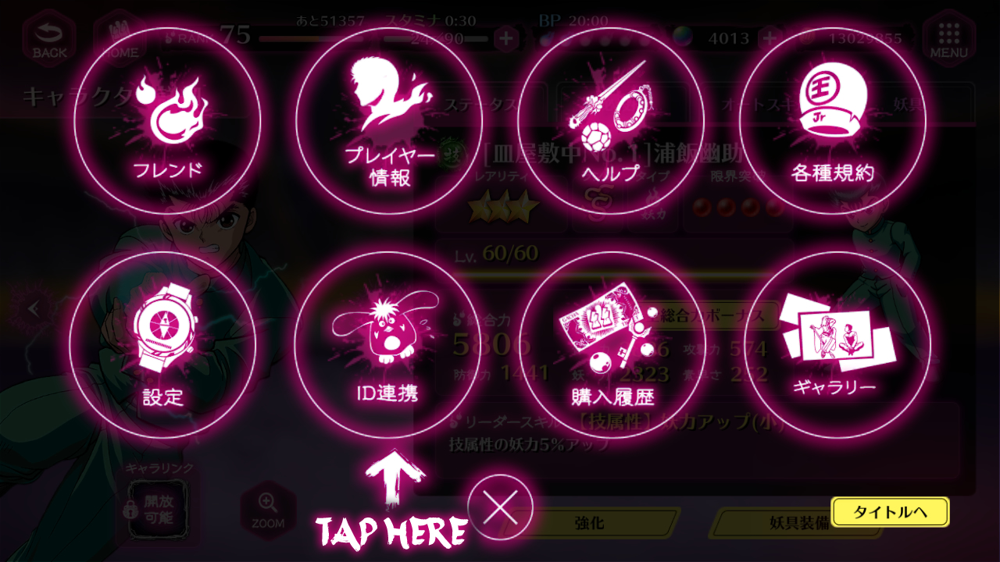

Data Transfer Guide Sections
■ Data Transfer.
Account Binding

Now you should be on the ID Link Screen. Choose one of the three methods and login with your specifications.
After you've done that, the screen will change - making the option you chose shadowed with a yellow text that reads 連携済, which means ID Link Completed.

Klab ID Method
To link your game with a Klab ID you first need to create a Klab ID in Klab's website. You can do that on this link. Once your ID has been sucessfully created, go back to the ID Link Screen and press the yellow button under Klab ID. This will bring you to the japanese login page. It's highly recommended that you change the language before attemping to login, since you'll have to solve a captcha at the end of the process and it can be hard to understand what the captcha is going to ask if you don't speak japanese. You can change the language if you scroll down a little and press "English".
After that you can just login normally and by the end of the process, your account will be linked.
The facebook option is easier because the page will already be in english when you click the button. Fill the spaces with your info and login to link your account.

Google Play
When you click the Google Play option, you'll be prompted to create a Gamer ID if you don't have one already. You cannot proceed unless you have one.
If you already do, you'll just be asked to allow access from "Yuhaku Maji Battle".
Press "allow" to login and link your current Maji Battle account to your Google Play account.
Data Transfer
After you do, the game will ask you to choose one of the 3 options in which you previously linked your account. Choose the same method you chose before and login in the same way, as if you would be linking again.
Once you're logged in, the game will ask you to choose between one of two accounts: the one in your device currently (might be either a blank account full of "----" or an old account of yours which will have "この端末のデータ" written in white on top of it) and the account linked in the method you chose. The linked account will have "(連携済)" witten next to it, while the unlinked account will have "(未連携)". Choose the account you want to keep by pressing the yellow button under it. The big text - "以前のデータを引き継ぎ" - means "transfer the previous data", while the small text "このデータを連携" means "link this account".
Now the game will ask you to confirm your choice, showing you that the account you chose in the previous step will replace the other account in your device. Make sure you have selected the right account by checking the name and date because if you proceed without being certain, you might replace your linked account with an account you don't want anymore. When you're sure, you can proceed by clicking the yellow button saying "引き継ぎ" which means "hand over".
After that you'll get a pop up window saying your data has been transfered successfully. After you close the window they'll refresh the game with your new information.
You're allowed to have your account on more than one device, which can be useful in case you end up losing or screwing up your account at some point. You cannot play with them at the same time, though, since when you login with a second device in the same account, the first device will be "kicked out" of it and vice-versa.